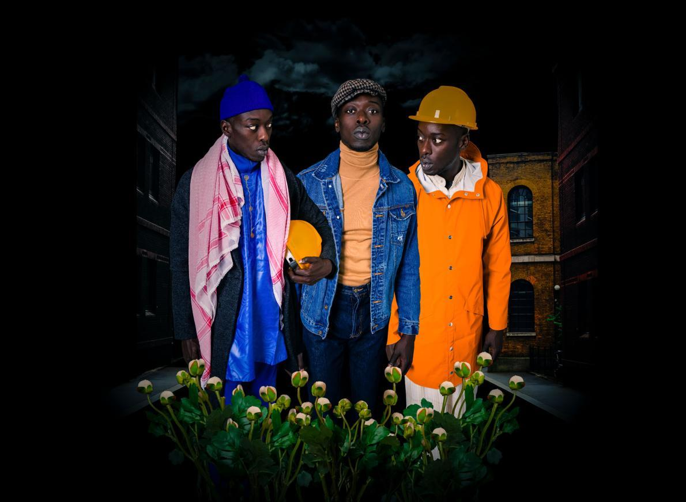
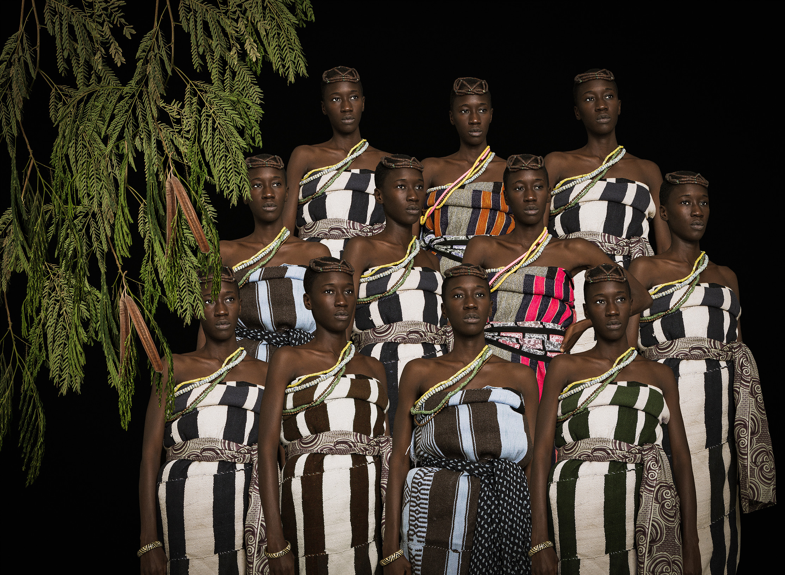
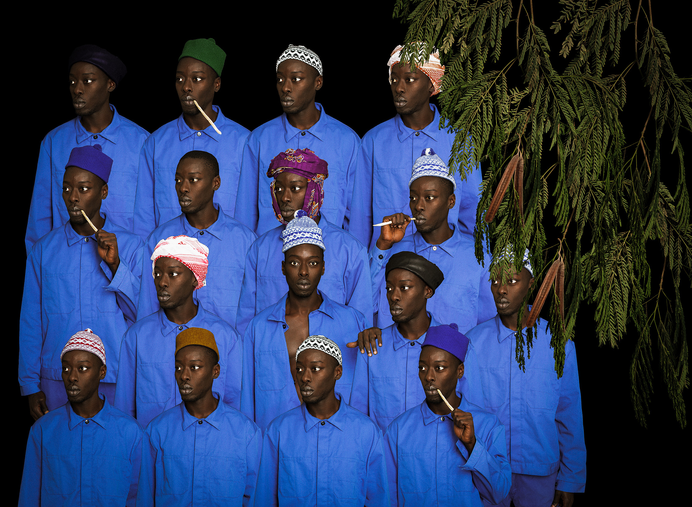
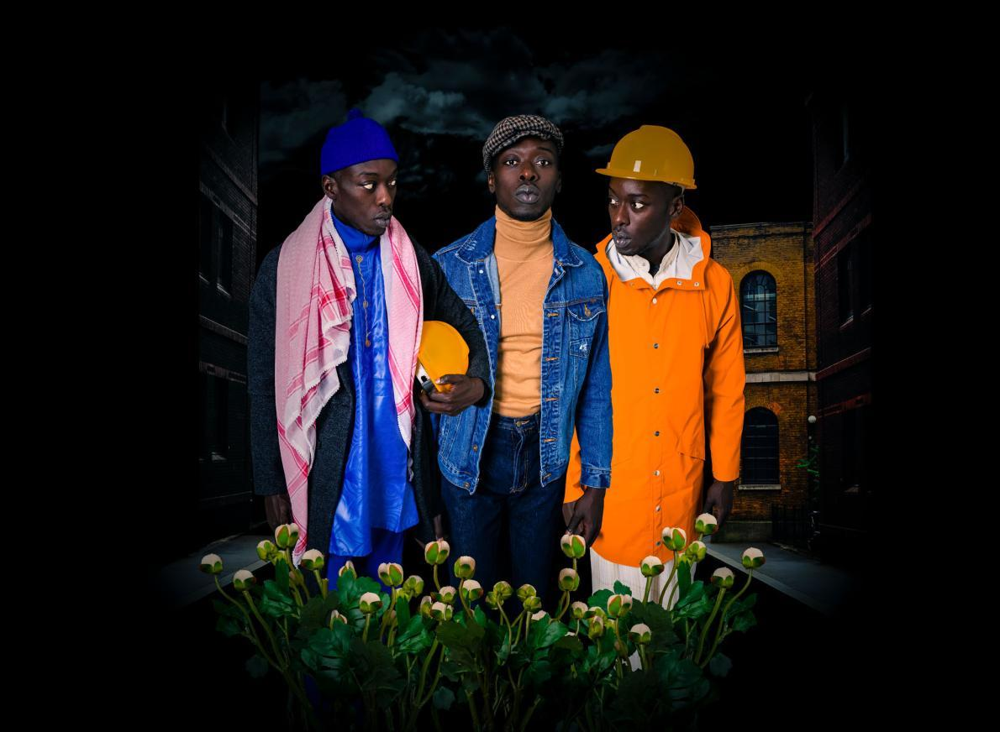
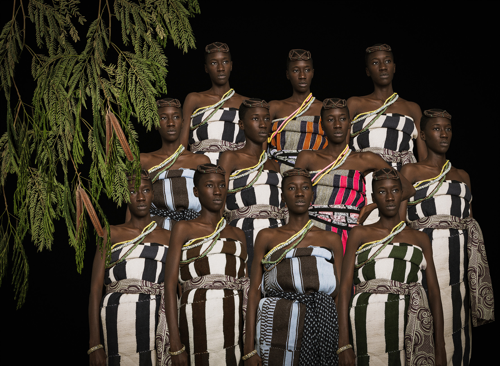
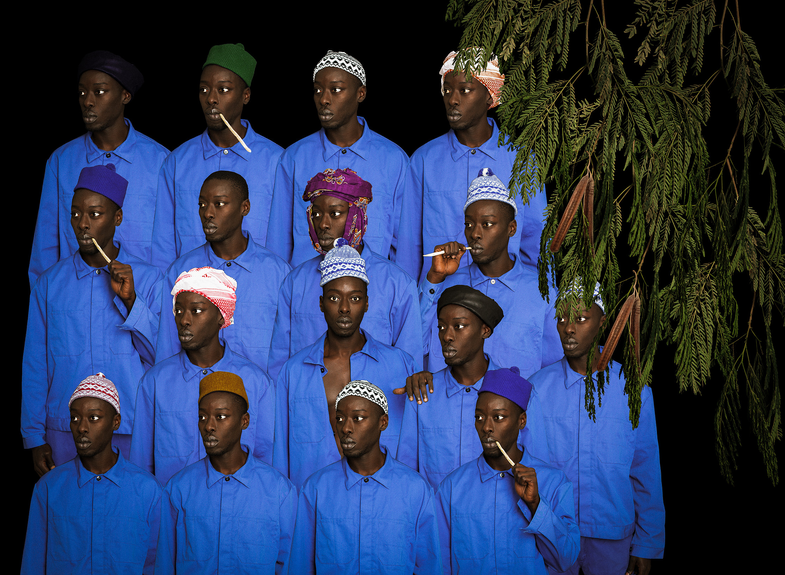

I personaggi femminili della serie hanno tutti il volto della sua amica Khadija Boye. Diop, che vive e lavora in Senegal, ha concepito questo progetto con l’intento di tracciare un parallelo «tra la cronologia dei movimenti di protesta nel continente africano e quella di altri movimenti della diaspora emersi negli stessi periodi». Per «ottenere una lettura più universale della storia della protesta nera, e creare le premesse per una migliore comprensione della questione». Le immagini di Diop sono ricche di dettagli rivelatori, frutto di un’attenta ricerca sull’abbigliamento e i tessuti tradizionali e sul significato simbolico di piante e fiori. Le sue meticolose ricostruzioni ci ricordano che le proteste non sono soltanto azioni fisiche, ma anche eventi culturali dove l’abbigliamento e lo stile diventano una forma di espressione politica, dalle ghirlande di fiori indossate dai partecipanti alla Marcia di Selma, donate da un pastore hawaiano in segno di rispetto e solidarietà, ai baschi e alle giacche di pelle che distinguevano i membri del Black Panther Party statunitense. Rimettendo in scena la storia nei panni dei suoi protagonisti, Diop fa rivivere il passato nel presente. Concentrandosi sulla nostra umanità collettiva, ribadisce il debito che abbiamo verso l’impegno dei nostri antenati. E ci ricorda che, storicamente, questo attivismo non ha influenzato solo la vita di chi lo ha praticato, ma ha cambiato anche il destino delle generazioni future.


Omar Victor Diop è nato a Dakar, in Senegal, dove vive tuttora. Trovando rapidamente successo con i primi progetti concettuali, nel 2012 è stato incoraggiato a terminare una carriera nella comunicazione aziendale per perseguire la vita come artista. Con un corpus di lavori che include belle arti, moda e ritratti fotografici - tra cui The Studio of Vanities, una serie di ritratti africani - Diop ama mescolare la fotografia con altri strumenti modella e usa il costume, lo styling e la scrittura creativa per dare vita ad installazioni complesse. Durante l'infanzia è rimasto talmente colpito della letteratura afro-caraibica, Maryse Condé per citare solo uno dei suoi autori preferiti nei cui romanzi i personaggi attuano una metamorfosi da vite di "alieni" a personaggi importanti della società. Diop vede questo come un riflesso del proprio viaggio, che a volte lo ha trovato a dialogare con piccole minoranze alla ricerca di esempi di adattamento a nuovi contesti e modi di essere. Immagina l'arte come l'unica conversazione che non finirà mai e prende ispirazione da persone che ridefiniscono il loro futuro quotidianamente credendo che sia l'unico modo per essere veramente eccezionali e lasciare un'impronta di valore per l'umanità.

 




